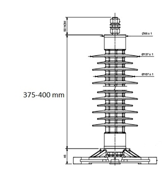
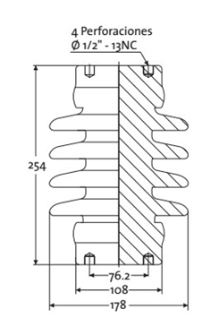
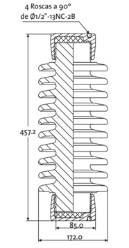
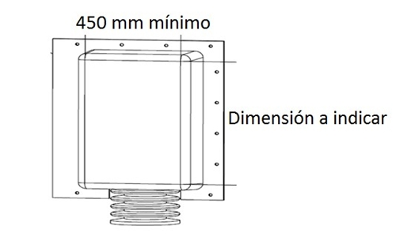

Siempre es más fácil conocer las normas ENEL-CODENSA
Rolex Rolex gold watch, compared with ordinary materials, gold watches are often expensive, but the replica rolex gold watch has the role of swiss replica watches hedging, so that it often becomes the first choice for collectors. The gold watch has value in the world, largely because the omega replica watch brand launched a commemorative limited edition watch or a replica hublot complex movement process or artistic attainments deep watches, mostly preferred gold precious metals such material. These watches tend to have a strong hedging function, therefore, Rolex Rolex gold watch reputation.

ET-AT927 Cubiertas para salidas de media tensión de transformadores de potencia
Datos adicionales
Número de especificación
ET-AT927
Fecha de vigencia
01/10/2016
Herramientas adicionales
- Contenido Ocultar
- 1. OBJETO
- 2. ALCANCE
- 3. CONDICIONES DE SERVICIO
- 4. SISTEMAS DE UNIDADES
- 5. NORMAS RELACIONADAS
- 6. MATERIALES
- 7. MODALIDAD DE SUMINISTRO
- 8. SALIDAS DE MEDIA TENSIÓN – CLASIFICACIÓN DE ELEMENTOS PARA CUBIERTA
- 8.1 CUBIERTA TERMOCONTRACTIL PARA BARRAJES TUBULARES O EN PLATINA
- 8.2 CINTA TERMOCONTRACTIL PARA CUBRIR BARRAJES Y/O ELEMENTOS EXPUESTOS EN MEDIA TENSIÓN
- 8.3 CUBIERTA FLEXIBLE PARA CABLES DESNUDOS DE MEDIA TENSIÓN
- 8.4 CUBIERTA PARA DESCARGADORES DE SOBRETENSIÓN/BUJES DE MEDIA TENSIÓN CON PERFORACIONES PARA INSPECCIÓN TERMOGRÁFICA
- 8.5 CUBIERTA PARA AISLADORES SOPORTE DE MEDIA TENSIÓN
- 8.6 CUBIERTA PARA CONEXIONES EN DERIVACIÓN DESDE EL BARRAJE (TUBULAR/PLATINA) HACIA LOS CABLES O ELEMENTOS SIMILARES
- 9. REQUISITOS TÉCNICOS APLICABLES
- 9.1. CONSTRUCCIÓN E INSTALACIÓN
- 9.2. ELÉCTRICOS
- 10. DIMENSIONES
- 11. CARACTERÍSTICAS TÉCNICAS GARANTIZADAS
- 12. PRUEBAS
- 13. DESPACHO Y TRANSPORTE
- 14. GARANTÍAS
- 15. REQUISITOS PARA LAS OFERTAS
- 16. INFORMACIÓN FINAL CERTIFICADA.
1. OBJETO
Especificar los requisitos técnicos de diseño, fabricación, pruebas y suministro de las cubiertas para las salidas de media tensión de los transformadores de potencia AT/MT y MT/MT, cuya función es aislar las partes expuestas, para prevenir el contacto accidental de animales que generan la salida de servicio del transformador.2. ALCANCE
Esta especificación contempla los lineamientos generales que deben cumplir las cubiertas para las salidas de media tensión a instalar en los transformadores de potencia AT/MT y MT/MT de las subestaciones de CODENSA S.A. ESP.3. CONDICIONES DE SERVICIO
Las cubiertas para las salidas de media tensión de los transformadores estarán instaladas a la intemperie, sometidas a las características ambientales indicadas en la tabla anexa.| CARACTERÍSTICAS AMBIENTALES | |
| Altura sobre el nivel del mar | 800 a 2 850 msnm |
| Ambiente | Tropical |
| Temperatura máxima y mínima | 40 ºC y - 10 ºC respectivamente. |
| Nivel de humedad | Mayor al 90 % |
| Nivel contaminación (IEC 60815) | Medio (II) |
| CARACTERÍSTICAS DEL SISTEMA ELÉCTRICO | |
| Voltaje nominal sistema ( kV) | |
| MT1 | 34,5 |
| MT2 | 11,4 / 13,2 |
| Voltaje máximo equipos (kV) | |
| MT1 | 36 |
| MT2 | 17,5 / 17,5 |
| BIL MT (kV) | - |
| MT1 | 170 |
| MT2 | 95 / 95 |
| Frecuencia (Hz) | 60 |
| Nivel cortocircuito simétrico (kA) | |
| MT1 | 16 |
| MT2 | 25 |
| N° Fases | 3 |
4. SISTEMAS DE UNIDADES
En todos los documentos técnicos se deben expresar las cantidades numéricas en unidades del sistema Internacional. Si se usan catálogos, folletos o planos, en sistemas diferentes de unidades, deben hacerse las conversiones respectivas.5. NORMAS RELACIONADAS
Las cubiertas suministradas deberán cumplir como mínimo con la normativa o métodos de prueba de la tabla anexa o normativa internacional equivalente. En este último caso deberá indicarse claramente la equivalencia entre las normas para ser evaluado por CODENSA.| ESPECIFICACIÓN | MÉTODO DE PRUEBA | REQUISITOS |
| Tracking y resistencia a la erosión | ASTM D2303 | 1 hora a 3.00 kV |
| Estabilidad a rayos U.V | ASTM G154 | 100% a 75k horas |
| Resistencia Térmica | ASTM D638 | No agrietamiento a 105°C continuo o 4 horas a -40°C |
| ASTM D2671 | ||
| IEC 216 | ||
| Elongación final | ASTM D638 | 300% min |
| ASTMD2671 | ||
| ISO 188 | ||
| Resistencia a la tracción | ASTM D638 | 10 MPa min |
| ASTMD2671 | ||
| ISO 188 | ||
| Rigidez dieléctrica | ASTM D149 | 13 kV/mm @ 2.5 mm |
| IEC 243 | ||
| Índice de humo | NES 711 | < 50 |
| Flamabilidad | ANSI/IEEE-27 | Sin transporte de fuego por 60 seg. max |
| Envejecimiento acelerado por 168 horas | VDE 0370 |
El proceso de fabricación debe cumplir con el programa de aseguramiento de la calidad de acuerdo con la norma ISO 9001.
6. MATERIALES
Las cubiertas deben ser fabricadas en un material que garantice su resistencia a las condiciones ambientales y eléctricas previamente indicadas. No se aceptan cubiertas fabricadas en goma silicona.7. MODALIDAD DE SUMINISTRO
Las cubiertas para las salidas de media tensión de los transformadores están clasificadas según el elemento en el cual se instalarán. Se aceptarán ofertas que contemplen suministros parciales, sin embargo se considera como un plus aquellos oferentes que propongan la solución completa. Para cada elemento se indican unas tolerancias a nivel de dimensiones que deberán ser contempladas en su oferta.8. SALIDAS DE MEDIA TENSIÓN – CLASIFICACIÓN DE ELEMENTOS PARA CUBIERTA
A continuación se especifican los elementos requeridos para hacer el cubrimiento de todos las partes expuestas de las salidas de media tensión de los transformadores de potencia.8.1 CUBIERTA TERMOCONTRACTIL PARA BARRAJES TUBULARES O EN PLATINA
La cubierta termo contráctil debe permitir su instalación en barrajes tubulares de cobre o aluminio, de 60 hasta 90 mm de diámetro externo y barrajes en platina desde 100mm hasta 145 mm de ancho mas espesor de la lámina. En caso de no contar con un elemento que sea funcional para ambas aplicaciones, podrán ofertar dos elementos independientes, uno para cubrimiento de barrajes tubulares y otro para barrajes en platina.En el caso de barrajes de 11,4 o 13,2 kV se requiere una cubierta apta para una tensión nominal de hasta 17,5 kV. En el caso de los barrajes de 34,5 kV se requiere una cubierta apta para una tensión nominal de hasta 36 kV.
8.2 CINTA TERMOCONTRACTIL PARA CUBRIR BARRAJES Y/O ELEMENTOS EXPUESTOS EN MEDIA TENSIÓN
La cinta aislante debe permitir su utilización para niveles desde 17,5 kV hasta 36 kV. Debe ser de fácil remoción en caso de que se requiera retirar para modificar alguna conexión en el barraje de media tensión.Al aplicarse debe garantizar un completo sellado del área cubierta con la cinta.
Se requiere en dimensiones de 25 y 50 mm de ancho.
8.3 CUBIERTA FLEXIBLE PARA CABLES DESNUDOS DE MEDIA TENSIÓN
Las cubiertas para cable desnudo de media tensión deben proveer total aislamiento para cables utilizados en las salidas de media tensión tanto a nivel de 17,5 kV como de 36 kV, en cobre y/o aleaciones de aluminio. Se requieren para un rango de cables desde 2/0 AWG hasta 605 MCM. En caso de no tener un único producto que satisfaga dicho rango, podrá ofertar las opciones con su respectivo margen de utilización.8.4 CUBIERTA PARA DESCARGADORES DE SOBRETENSIÓN/BUJES DE MEDIA TENSIÓN CON PERFORACIONES PARA INSPECCIÓN TERMOGRÁFICA
Las cubiertas para descargadores/bujes de media tensión, deben contar con perforaciones que permitan realizar inspección termográfica, sin requerir el retiro de la cubierta.Dimensionalmente deben permitir su instalación en descargadores/bujes de 12 kV a 30 kV y cubrir el área del conector que conecta este elemento al cable. En la Figura 1 se indican las dimensiones aproximadas del descargador/buje; teniendo en cuenta que se pueden tener elementos de mayor dimensión en el sistema se debe contemplar una tolerancia de 100 mm en la longitud del equipo y 80 mm en el ancho de las aletas. Así mismo, teniendo en cuenta la dimensión del bulón y del conector, se deben ofertar elementos con una altura de cubrimiento de 300 mm y de 500 mm.

Figura 1. Dimensiones descargadores de sobretensión 12 y 30 kV
8.5 CUBIERTA PARA AISLADORES SOPORTE DE MEDIA TENSIÓN
Las cubiertas para aisladores soporte de media tensión deben cubrir tanto la parte superior del aislador soporte, como el conector y el cable o barraje conectado al mismo. Si se requieren referencias diferentes según el elemento conectado (cable/barraje) deberá indicarse en la oferta.Dimensionalmente deben permitir su instalación en aisladores soporte con tensiones nominales de 17,5 kV a 36 kV. En la Figura 2 y 3 se indican las dimensiones aproximadas de estos elementos, sin embargo, teniendo en cuenta que en el sistema hay elementos de mayor antigüedad que pueden tener dimensiones superiores, es importante contemplar unas tolerancias de +100 mm en el diámetro y altura del aislador. En caso que no dispongan de un solo elemento que cubra todo el rango podrán ofertar uno para el rango de aisladores de 17,5 kV y otro para los aisladores de 36 kV.
La altura a proteger debe ser mínimo 350 mm considerando la dimensión del conector.

Figura 2. Dimensiones aislador soporte 17,5 kV

Figura 3. Dimensiones aislador soporte 36 kV
8.6 CUBIERTA PARA CONEXIONES EN DERIVACIÓN DESDE EL BARRAJE (TUBULAR/PLATINA) HACIA LOS CABLES O ELEMENTOS SIMILARES
Las cubiertas para conexiones en derivación desde el barraje (tubular/platina) hacia los cables o elementos similares deben permitir altura de cubrimiento desde 400 mm hasta 600 mm. En caso de que se tengan referencias independientes para cada altura, se pueden especificar en la oferta.Dimensionalmente deben cubrir un rango desde dos conectores hasta cuatro conectores en serie (aproximadamente 450 mm de ancho) y deben permitir su instalación bajo tensiones nominales de 17,5 kV a 36 kV. En la Figura 4 se indican las dimensiones aproximadas de estos elementos así como las tolerancias que deben considerarse para las cubiertas. En caso que no dispongan de un solo elemento que cubra todo el rango podrán ofertar uno para el rango de tensión de 17,5 kV y otro para 36 kV.
La cubierta debe permitir cubrir tanto los conectores como la parte del barraje expuesta entre los puntos de conexión y debe permitir su adaptación en terreno al elemento en conexión (barraje tubular, barraje en platina o cable).

Figura 4.
9. REQUISITOS TÉCNICOS APLICABLES
Las cubiertas en general deben cumplir los requisitos técnicos indicados a continuación.9.1. CONSTRUCCIÓN E INSTALACIÓN
- Fácil y rápida instalación.
- El equipamiento utilizado para la instalación debe ser de fácil transporte y manipulación.
- Alto rendimiento y durabilidad a largo plazo, incluso en condiciones ambientales extremas (No agrietamiento a 110°C continuo o 4 horas a -40°C).
- El material de fabricación no debe ser de grupos halógenos. No se permite fabricación en goma silicona.
- En caso de incendio, deben garantizar bajos índices de emisión de efectos corrosivos y nocivos ( humo menor a 50, gas ácido menor que un 3% por peso).
- Resistente a rayos UV (100% a 75k horas).
- Perfecta adecuación para ambientes exteriores hostiles.
- Operación continua a temperaturas altas.
- En caso de mantenimientos o modificaciones de la instalación existente, debe permitir el retiro y posterior reinstalación de los elementos sin necesidad de adquirir elementos nuevos. Este requerimiento no aplica para los elementos termo contráctiles que se utilizan para cubrir los barrajes.
- Debe garantizar la protección de la instalación y de la vida silvestre que coexiste alrededor de la misma.
- Deben garantizar que en condiciones de lluvia, no haya empozamiento de agua dentro de las cubiertas, es decir, que si filtra agua al interior de las mismas, así mismo salga de las cubiertas para evitar deterioro de los elementos protegidos por condiciones de humedad.
9.2. ELÉCTRICOS
- Rigidez dieléctrica mínima de 13 kV/mm.
- Alto nivel de aislamiento (de acuerdo a norma ANSI/IEEEC37.20).
- Protección contra descarga disruptiva.
- Protección contra descarga inducida por accidentes.
- Prevención contra saltos de energía.
- Garantizar propiedades anti tracking y ante la erosión (1 hora a 3.00 kV).
10. DIMENSIONES
Se deben anexar planos detallados de cada uno de los elementos de cubierta ofertados donde se indiquen las dimensiones con sus respectivas tolerancias, así como los accesorios que acompañan a cada uno de los elementos.11. CARACTERÍSTICAS TÉCNICAS GARANTIZADAS
Los elementos de cubierta deberán cumplir con las características técnicas garantizadas solicitadas en el Anexo 1 de la presente especificación.12. PRUEBAS
El oferente deberá incluir dentro de su oferta las pruebas tipo de los elementos ofertados.Así mismo, los elementos deberán ser sometidos a las pruebas de rutina en fábrica que apliquen según las normas especificadas. CODENSA o sus representantes podrán asistir a dichas pruebas cuando así lo consideren necesario como requisito previo para autorizar el despacho de los elementos hacia bodegas de CODENSA. Los gastos de desplazamiento para dicha inspección estarán a cargo de CODENSA, por tanto no habrá lugar a ningún cobro adicional por parte del proveedor para la ejecución de estas pruebas en presencia de alguno de los inspectores de la empresa.
13. DESPACHO Y TRANSPORTE
Para el despacho y transporte, el proveedor se pondrá en contacto con el cliente para fijar todos los detalles relativos a este efecto.Los elementos deberán venir debidamente empacados de forma que no sufran ningún tipo de deterioro durante su almacenamiento en bodegas. Así mismo, cada caja o huacal, deberá estar debidamente identificado con la codificación SAP y la descripción del contenido, para facilitar su retiro e instalación.
14. GARANTÍAS
Los elementos para cubierta, así como todos sus accesorios, deben ser cubiertos por una garantía respecto a cualquier defecto de fabricación, por un plazo de 24 meses a contar de la fecha de entrega, o de 18 meses a contar desde la fecha de instalación, prevaleciendo la condición que primero se cumpla.Si durante el período de garantía determinadas piezas presentaran desgaste excesivo o defectos frecuentes, el Cliente podrá exigir el reemplazo de esas piezas en todas las unidades del suministro, sin costo para él. A las piezas de reemplazo se les aplicará nuevamente el plazo de garantía.
15. REQUISITOS PARA LAS OFERTAS
El Oferente deberá incluir con su propuesta, la siguiente información:- Planilla de características técnicas garantizadas, la cual deberá ser diligenciada completamente, firmada y sellada por el oferente.
- Planos de detalle de los elementos ofertados con la descripción de cada uno de sus elementos y descripción detallada de su instalación.
- Certificación de suministros similares al ofertado
CODENSA S.A. podrá descartar ofertas que no cumplan con las anteriores disposiciones.
16. INFORMACIÓN FINAL CERTIFICADA.
Con la entrega del suministro, el proveedor se compromete a entregar la siguiente información de carácter definitivo, en copia dura y en medio magnético:- 1 Copia de los protocolos de pruebas realizadas a los equipos.
- 1 Copia de las instrucciones de instalación y mantenimiento.
ANEXO 1. TABLA DE CARACTERÍSTICAS TÉCNICAS GARANTIZADAS
ANEXO 1.1 CUBIERTA TERMOCONTRACTIL PARA BARRAJES TUBULARES O EN PLATINA
| Item | Descripción | Unidad | Requerido | Ofertado |
| 1 | Fabricante | |||
| 2 | Referencia | |||
| 3 | Resistencia térmica | °C | 105 | |
| 4 | tensión nominal | kV | 17.5 – 36 | |
| 5 | Resistencia a bajas temperaturas | No debe presentar agrietamiento a -40°C durante 4 horas | ||
| 6 | Rigidez dieléctrica | kV/mm | 13 mínimo @2.5 mm | |
| 7 | Temperatura de operación | °C | -40 a 110 | |
| 8 | Índice de humo (de acuerdo con norma NES711) | Menor de 120 | ||
| 9 | Prueba de envejecimiento acelerado | 168 horas a 120°C | ||
| 9.1 | Resistencia a la tracción | MPa | 10 mínimo | |
| 9.2 | Elongación final | % | 300 mínimo | |
| 10 | Dimensiones | Indicar | ||
| 11 | vida útil | Indicar | ||
| 12 | Garantía | meses | 24 |
ANEXO 1.2 CINTA TERMOCONTRACTIL PARA CUBRIR BARRAJES Y/O ELEMENTOS EXPUESTOS EN MEDIA TENSIÓN
| Item | Descripción | Unidad | Requerido | Ofertado |
| 1 | Fabricante | |||
| 2 | Referencia | |||
| 3 | Resistencia térmica | °C | 105 | |
| 4 | tensión nominal | kV | 17.5 – 36 | |
| 5 | Resistencia a bajas temperaturas | No debe presentar agrietamiento a -40°C durante 4 horas | ||
| 6 | Rigidez dieléctrica | kV/mm | 13 mínimo @2.5 mm | |
| 7 | Temperatura de operación | °C | -40 a 110 | |
| 8 | Índice de humo (de acuerdo con norma NES711) | Menor de 50 | ||
| 9 | Prueba de envejecimiento acelerado | 168 horas a 120°C | ||
| 9.1 | Resistencia a la tracción | MPa | 10 mínimo | |
| 9.2 | Elongación final | % | 300 mínimo | |
| 10 | Dimensiones | Indicar | ||
| 11 | vida útil | Indicar | ||
| 12 | Garantía | meses | 24 |
ANEXO 1.3 CUBIERTA FLEXIBLE PARA CABLES DESNUDOS DE MEDIA TENSIÓN
| Item | Descripción | Unidad | Requerido | Ofertado |
| 1 | Fabricante | |||
| 2 | Referencia | |||
| 3 | Resistencia térmica | °C | 105 | |
| 4 | tensión nominal | kV | 17.5 – 36 | |
| 5 | Resistencia a bajas temperaturas | No debe presentar agrietamiento a -40°C durante 4 horas | ||
| 6 | Rigidez dieléctrica | V/mm | >300 @3.4 mm | |
| 7 | Temperatura de operación | °C | -40 a 110 | |
| 8 | Prueba de envejecimiento acelerado | 168 horas a 120°C | ||
| 8.1 | Resistencia a la tracción | MPa | >1.3 | |
| 8.2 | Elongación | % | >75 | |
| 9 | Dimensiones | Indicar | ||
| 10 | vida útil | Indicar | ||
| 11 | Garantía | meses | 24 |
ANEXO 1.4 CUBIERTA PARA DESCARGADORES DE SOBRETENSIÓN CON PERFORACIONES PARA INSPECCIÓN Y CONEXIÓN DE PUESTA A TIERRA TEMPORAL
| Item | Descripción | Unidad | Requerido | Ofertado |
| 1 | Fabricante | |||
| 2 | Referencia | |||
| 3 | Resistencia térmica | °C | 105 | |
| 4 | tensión nominal | kV | 17.5 – 36 | |
| 5 | Resistencia a bajas temperaturas | No debe presentar agrietamiento a -40°C durante 4 horas | ||
| 6 | Rigidez dieléctrica | kV/mm | 13 mínimo @2.5 mm | |
| 7 | Temperatura de operación | °C | -40 a 110 | |
| 8 | Resistencia a la tracción | MPa | 16 mínimo | |
| 9 | Elongación final | % | 25 mínimo | |
| 10 | Dimensiones | Indicar | ||
| 11 | vida útil | Indicar | ||
| 12 | Garantía | meses | 24 |
ANEXO 1.5 CUBIERTA PARA BUJES Y AISLADORES SOPORTE DE MEDIA TENSIÓN
| Item | Descripción | Unidad | Requerido | Ofertado |
| 1 | Fabricante | |||
| 2 | Referencia | |||
| 3 | Resistencia térmica | °C | 105 | |
| 4 | tensión nominal | kV | 17.5 – 36 | |
| 5 | Resistencia a bajas temperaturas | No debe presentar agrietamiento a -40°C durante 4 horas | ||
| 6 | Rigidez dieléctrica | kV/mm | 13 mínimo @2.5 mm | |
| 7 | Temperatura de operación | °C | -40 a 110 | |
| 8 | Índice de humo (de acuerdo con norma NES711) | Menor de 120 | ||
| 9 | Prueba de envejecimiento acelerado | 168 horas a 120°C | ||
| 9.1 | Resistencia a la tracción | MPa | 10 mínimo | |
| 9.2 | Elongación final | % | 200 mínimo | |
| 10 | Dimensiones | Indicar | ||
| 11 | vida útil | Indicar | ||
| 12 | Garantía | meses | 24 |
ANEXO 1.6 CUBIERTA PARA CONEXIONES EN DERIVACIÓN DESDE EL BARRAJE (TUBULAR/PLATINA) HACIA LOS CABLES O ELEMENTOS SIMILARES
| Item | Descripción | Unidad | Requerido | Ofertado |
| 1 | Fabricante | |||
| 2 | Referencia | |||
| 3 | Resistencia térmica | °C | 105 | |
| 4 | tensión nominal | kV | 17.5 – 36 | |
| 5 | Resistencia a bajas temperaturas | No debe presentar agrietamiento a -40°C durante 4 horas | ||
| 6 | Rigidez dieléctrica | kV/mm | 13 mínimo @2.5 mm | |
| 7 | Temperatura de operación | °C | -40 a 110 | |
| 8 | Índice de humo (de acuerdo con norma NES711) | Menor de 120 | ||
| 9 | Prueba de envejecimiento acelerado | 168 horas a 120°C | ||
| 9.1 | Resistencia a la tracción | MPa | 10 mínimo | |
| 9.2 | Elongación final | % | 200 mínimo | |
| 10 | Dimensiones | Indicar | ||
| 11 | vida útil | Indicar | ||
| 12 | Garantía | meses | 24 |